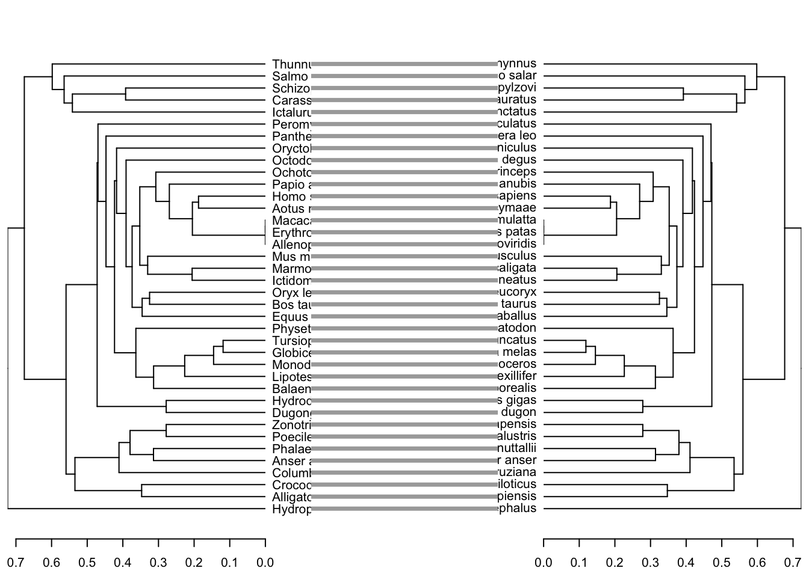

# Installing the package dendextend
install.packages("dendextend")
# Installing the package ggmsa
BiocManager::install("ggmsa")
# Installing the package msa from Bioconductor
BiocManager::install("msa")Lab 6: Sequence Evolution
The purpose of this lab is for you to get familiarized with methodologies used in the analysis of sequence similarity.
Learning objectives
Click to expand
By the end of this lab you will be able to:
- Demonstrate the ability to load biological sequences into R
- Perform dot-plot alignment using AA and nucleotide sequences
- Analyze sequences for regions of homology based on dot-plot alignments
- Perform global and local alignments using dynamic programming algorithms
- Analyze regions of homology based on those alignments
- Retrieve alignment scores
- Export sequences to be used for homology search in BLAST
- Perform multiple sequence alignment using the
msapackage - Print multiple sequence alignments and identify conserved areas and consensus sequences
- Analyze differences in alignments with a tanglegram
Note
Note 1: The assignment questions for this week are interspersed throughout the tutorial. They are itemized in the table of contents, so make sure you answer all of them.
Note
Note 2: Install the new packages ASAP, as some might take considerable time and may require you to update many dependencies. If prompted to install UTF8, do not install from binaries.
To complete this lab, you will need to install the following packages:
dendextend, a package that allows you to compare dendrogramsmsa, a package for multiple sequence alignmentsggmsa, to plot MSAs with ggplot2
# lapply is part of the apply family of functions, one of those functions that act as a for loop
lapply(c("vegan","ape","ggdendro","seqinr",
"Biostrings", "tidyverse","dendextend","msa","ggmsa"),library, character.only = TRUE)Pairwise alignment
Let’s begin the lab by conducting pairwise (PW) sequence alignments. To do so, you will use two libraries you are already familiar with: Biostrings and seqinr. You will perform a few types of pairwise sequence alignments using several sequences.
Dot-plot alignment
A dot-plot alignment is a simple way to perform pairwise sequence alignment. The purpose of this exercise is to grant you firsthand experience working with dot-plot alignments and to understand their advantages and disadvantages.
Let’s examine how well dot-plot alignments work with nucleotide sequences. You will align three 16S rRNA genes. You will use a file that contains 200 Archaeal rRNA genes obtained from RefSeq.
# Read the fasta file with Archaeal rRNA sequences from GitHub
arch <- seqinr::read.fasta(file = "https://raw.githubusercontent.com/idohatam/Biol-3315-files/main/Arch.fa")Since the dataset contains both 16S rRNA and 23S rRNA sequences, let’s find elements in the list imported by read.fasta() that house 16S rRNA sequences. We will do that by asking which positions house vectors with fewer than 1700 elements (the size of 16S rRNA genes ranges between 1400–~1650 bp).
# Note: using the function lapply to iterate over the list returned by read.fasta
which(unlist(base::lapply(arch, function(x) length(x) < 1700)))NG_041949 NG_041950 NG_041953 NG_042066 NG_042069 NG_042072 NR_024799 NR_024870
2 3 6 16 19 20 23 24
NR_025028 NR_025303 NR_025555 NR_025718 NR_025933 NR_026246 NR_028147 NR_028148
25 26 27 28 29 30 31 32
NR_028149 NR_028150 NR_028151 NR_028152 NR_028153 NR_028154 NR_028155 NR_028156
33 34 35 36 37 38 39 40
NR_028157 NR_028158 NR_028159 NR_028160 NR_028161 NR_028162 NR_028163 NR_028164
41 42 43 44 45 46 47 48
NR_028165 NR_028166 NR_028167 NR_028168 NR_028169 NR_028170 NR_028171 NR_028172
49 50 51 52 53 54 55 56
NR_028173 NR_028174 NR_028175 NR_028176 NR_028177 NR_028178 NR_028179 NR_028180
57 58 59 60 61 62 63 64
NR_028181 NR_028182 NR_028183 NR_028184 NR_028185 NR_028186 NR_028187 NR_028188
65 66 67 68 69 70 71 72
NR_028189 NR_028190 NR_028191 NR_028192 NR_028193 NR_028194 NR_028195 NR_028196
73 74 75 76 77 78 79 80
NR_028197 NR_028198 NR_028199 NR_028200 NR_028201 NR_028202 NR_028203 NR_028204
81 82 83 84 85 86 87 88
NR_028205 NR_028206 NR_028207 NR_028208 NR_028209 NR_028210 NR_028211 NR_028212
89 90 91 92 93 94 95 96
NR_028213 NR_028214 NR_028215 NR_028216 NR_028217 NR_028218 NR_028219 NR_028220
97 98 99 100 101 102 103 104
NR_028221 NR_028222 NR_028223 NR_028224 NR_028225 NR_028226 NR_028227 NR_028228
105 106 107 108 109 110 111 112
NR_028229 NR_028230 NR_028231 NR_028232 NR_028233 NR_028234 NR_028235 NR_028236
113 114 115 116 117 118 119 120
NR_028237 NR_028238 NR_028239 NR_028240 NR_028241 NR_028242 NR_028243 NR_028244
121 122 123 124 125 126 127 128
NR_028245 NR_028246 NR_028247 NR_028248 NR_028249 NR_028250 NR_028251 NR_028252
129 130 131 132 133 134 135 136
NR_028253 NR_028254 NR_028255 NR_028603 NR_028609 NR_028628 NR_028646 NR_028701
137 138 139 140 141 142 143 144
NR_028779 NR_028831 NR_028856 NR_028861 NR_028877 NR_028916 NR_028921 NR_028937
145 146 147 148 149 150 151 152
NR_028955 NR_029053 NR_029054 NR_029055 NR_029059 NR_029086 NR_029122 NR_029124
153 154 155 156 157 158 159 160
NR_029127 NR_029140 NR_029141 NR_029142 NR_029214 NR_029300 NR_029316 NR_037131
161 162 163 164 165 166 167 168
NR_040776 NR_040777 NR_040778 NR_040779 NR_040788 NR_040790 NR_040870 NR_040876
169 170 171 172 173 174 175 176
NR_040881 NR_040922 NR_040935 NR_040964 NR_040968 NR_040969 NR_040973 NR_041310
177 178 179 180 181 182 183 184
NR_041513 NR_041665 NR_041669 NR_041698 NR_041713 NR_041716 NR_041717 NR_041774
185 186 187 188 189 190 191 192
NR_041788 NR_041789 NR_041801 NR_041828 NR_041876 NR_041896 NR_041943 NR_041944
193 194 195 196 197 198 199 200 Looks like there are quite a few 16S rRNA sequences in the dataset. Let’s get the last 3 elements. Note that arch is a list; therefore, the use of lapply() makes it very convenient to grab all three sequences without recycling code or using a for loop. Note as well that lapply() returns a list and requires unlisting just for ease of use later on.
arch_16s <- unlist(lapply(arch[(length(arch)-2):length(arch)],
function(x) paste0(x,collapse = "")))Now let’s figure out how to work with the function dotPlot().
?dotPlot()Question 1
A. What is the length of each sequence? Show your code (1 mark).
B. Run the dotPlot() function to compare the first and third sequences, and to compare the second and third sequences using the default settings. Could you identify an optimal alignment using the default settings? Show your code and attach the resulting figure from each alignment saved as PDF (you can export from the plot pane) (3 marks). Hint: Note that dotPlot() only accepts character vectors where each element is a single character (e.g., c("A", "T", "G", "C")). You might want to explore using str_split_1() from the stringr package.
C. Run the same alignments using a smoothing window with a word size of 50 letters, stringency of 30, and make sure that the window progresses one position at a time. Could you identify an optimal alignment in any of the cases? Is there any apparent feature in any of the alignments? Show your code and attach the resulting figures as PDFs (3 marks).
Next, let’s examine how well a dot-plot alignment will perform when inspecting amino acid (AA) sequences. Remember that AA sequences use a 20-letter alphabet, which in theory should reduce spurious matching.
To do that, first load the selA.fa file (found on GitHub) with read.fasta() from seqinr.
# Load selA using the read.fasta function from seqinr
selA <- read.fasta(file = "https://raw.githubusercontent.com/idohatam/Biol-3315-files/main/selA.fa")
# What class is this variable?
class(selA)[1] "list"# How will you use it in subsequent functions?Question 2
A. Use the dotPlot() function with default settings to compare the 1st and 5th sequences in selA. Can you identify an alignment? Show your code and include a PDF of the figure produced (2 marks).
B. Now, smooth the sequences by selecting a window size of 10, stringency of 5, and a slide of one position. Did it improve the alignment? Show your code and attach a PDF of the resulting figure (2 marks).
C. What happens if you change the window size to 60 and select a stringency of 12? What does it tell you about results obtained by this technique? Show your code and include a PDF of the figure produced (3 marks).
Global PW alignment with NWA
It’s time to switch it up and use some fancier methods and fancier variable classes—yes, it’s time for some Biostrings and dynamic programming algorithms.
You will work with the Needleman-Wunsch algorithm (NWA) for global alignment. Remember: global alignments align sequences from end to end, attempting to align every position in both sequences.
First, it is necessary to convert the sequences used in the previous example to Biostrings class variables. Furthermore, remember that a sequence alignment using a dynamic programming algorithm receives an alignment score. Therefore, it is necessary to create a scoring matrix for the nucleotide sequences (what will you use to score AA alignments?).
# Convert the nucleotide sequences to StringSets
arch_strinS <- DNAStringSet(arch_16s)Now, let’s convert the AA sequences to an AAStringSet. The AA sequences are saved as a list; also, they are lowercase and the substitution matrices are uppercase, so we need to correct for it. We will chain a few lapply functions to iterate over the list. The inner lapply pastes the sequences as strings, the second lapply changes the case to upper, then we unlist the list into a vector with the same number of elements as the list. Each element is a string that represents a sequence.
selAset <- AAStringSet(unlist(lapply((lapply(selA, base::paste, collapse = "")),
stringr::str_to_upper), '[[',1))Need to set a scoring matrix for the alignment of nucleotide sequences; note that the scoring matrix only accounts for matches vs. mismatches; gap penalties will be addressed as arguments in the alignment function.
nucsubmat <- nucleotideSubstitutionMatrix(match = 1, mismatch = -1, type = "DNA")Warning in .call_fun_in_pwalign("nucleotideSubstitutionMatrix", ...): nucleotideSubstitutionMatrix() has moved to the pwalign package. Please
call pwalign::nucleotideSubstitutionMatrix() to get rid of this
warning.# How would you load the protein substitution matrix?
?substitution.matrices
# Arguments for pairwiseAlignment
?pairwiseAlignmentNow it’s your turn. Run the function pairwiseAlignment() on the same nucleotide sequences used for dot-plot. Remember that you need to subset the XStringSet. Use -1 as the penalty for opening and extending. Make sure to use the correct substitution matrix. Store the resulting PairwiseAlignmentsSingleSubject in a list (you should have two elements in the list).
Similarly, run pairwiseAlignment() for the AA sequences from the previous example. Use the following scoring matrices: BLOSUM62, BLOSUM80, PAM120, PAM40. What do the numbering systems for these matrices represent? Store these in a list (you should have 4 elements in the list).
Did you notice how much faster NWA is compared with a dot-plot alignment?
Question 3
A. Show the code used for each alignment; make sure to comment (2 marks).
B. Print the nucleotide alignments. What was the score for each of them? Given that 16S rRNA genes are highly conserved, would you expect these alignments to have negative scores (2 marks)?
C. Print each of the AA alignments. Did the trend in scores agree between PAM and BLOSUM (1 mark)?
Local PW alignment with SWA
Now let’s do the same, but perform a local alignment using the Smith-Waterman algorithm (SWA). Remember: local alignments identify the best matching subsequence regions rather than aligning sequences end to end. As before, make sure to store your alignments in two lists.
Warning in .call_fun_in_pwalign("pairwiseAlignment", ...): pairwiseAlignment() has moved to the pwalign package. Please call
pwalign::pairwiseAlignment() to get rid of this warning.
Warning in .call_fun_in_pwalign("pairwiseAlignment", ...): pairwiseAlignment() has moved to the pwalign package. Please call
pwalign::pairwiseAlignment() to get rid of this warning.Question 4
A. Show the code used for each alignment; make sure to comment (2 marks).
B. What was the score and length of the local alignment between Arch1 and Arch3? What positions in Arch1 and Arch3 were aligned (remember that XString is an S4 object and should be subsetted using @ and not $)? Show your code (3 marks).
C. Run the sequence for Arch1 in nucleotide BLAST. Is it actually an archaeal sequence? What species and genus did the top hit belong to? Include a screenshot of the description and graphic summary tabs. Tip: check the box for excluding uncultured organisms from the alignment (3 marks).
D. What were the lengths of the AA alignments? Did they change with different substitution matrices? Show your code (2 marks).
MSA
In this part, you will perform multiple sequence alignment (MSA) with the HBA and HBB sequences. You will read these files directly from GitHub using the URLs provided in the code. These files contain datasets of hemoglobin A and hemoglobin B from several organisms. As you can see, the datasets are quite messy—i.e., the headers are long and inconsistent. Furthermore, the HBB dataset contains two fewer organisms than HBA. You’ll need to clean up these datasets in order to compare alignments with dendextend.
The snippet below shows how to clean up the datasets once loaded.
Important: Ensure that the HBA datasets contain only the sequences that are also present in the HBB datasets (hint: think about subsetting based on names).
First, we read the files as XStringSet objects.
# Read files as XStringSet
hba_n <- readDNAStringSet(filepath = "https://raw.githubusercontent.com/idohatam/Biol-3315-files/main/HBA.fasta")
hba_aa <- readAAStringSet(filepath = "https://raw.githubusercontent.com/idohatam/Biol-3315-files/main/HBA_aa.fasta")Next, we clean up the names of the nucleotide sequences. Splitting the names based on a blank space results in a matrix; we choose the 2nd and 3rd columns, which include the genus and species names. We use apply() to iterate over the columns and get a vector of names in the format “Genus Species”. We will use functions from the stringr package.
# Note that for cleanup I am using functions from stringr; make sure to load it
names(hba_n) <- apply(str_split_fixed(names(hba_n),
pattern = " ", 4)[,2:3], 1, base::paste,
collapse = " ")Finally, we clean up the names of the amino acid sequences. Here, genus and species are surrounded by brackets []. We can use that to retrieve them. Note that \\ are used as escape characters since [] have meaning in R syntax.
names(hba_aa) <- str_remove_all(str_split_fixed(names(hba_aa), pattern = "\\[", n=2)[,2], "\\]")The MUSCLE implementation is a bit finicky with respect to names, so make sure to run over the naming scheme for all
StringSets, also note that MUSCLE might be finicky with respect to number of seqs, if one of the files have more than 40 keep only the sequences that overlap between both files. Now that all the sets are clean, it’s time to perform MSA. The functionmsa()can use CLUSTALW, MUSCLE, CLUSTAL Omega, or CLUSTAL 2.0. You will only use MUSCLE for the sake of this lab to keep things short. You will use the default settings, which means BLOSUM62 for AA alignments.
Here are the functions that you will need to use for the next part:
?msa()
?msaConvert()
?msaConsensusSequence()
?dist.alignment()You can also use the msa package reference manual.
Note
Note: You will also need the HBB.fasta and HBB_aa.fasta files. You can source those as well from my GitHub page.
As you have learned in lecture, one advantage of performing multiple sequence alignment is the ability to identify conserved domains and consensus sequences. You will use ggmsa to visualize only AA alignments; the nucleotide ones are too large to print. Interfacing with ggmsa requires a bit of a workaround, which is demonstrated in the snippet below.
First, we convert the MSA to an AAStringSet. ggmsa accepts Biostrings class types (e.g., XStringSet, AAMultipleAlignment, etc.), and XStringSet variables are much more malleable than MultipleAlignment variables.
hba_aa_msa_ms <- AAStringSet(AAMultipleAlignment(hba_aa_msa_m))Converting to a Biostrings element removes the consensus sequence; let’s add it as the last sequence. To do so, we turn the consensus sequence into an AAStringSet and add it as an additional element to the AAStringSet generated above. We are using gsub() to substitute ? which marks ambiguity with * since ? is not part of the AAStringSet alphabet.
hba_aa_msa_ms[length(hba_aa_msa_ms)+1] <- AAStringSet(
gsub("\\?", "*", msaConsensusSequence(hba_aa_msa_m)))Lastly, add the name for the new consensus sequence, check the output, and pull up the help file for ggmsa().
names(hba_aa_msa_ms)[length(hba_aa_msa_ms)] <- "Consensus"
# Looks good
hba_aa_msa_ms[length(hba_aa_msa_ms)]AAStringSet object of length 1:
width seq names
[1] 144 -MVLS*ADK*NVKA*WGKIGGHA...P*VHASLDKFLASVSTVLTSKYR Consensus# How to use the ggmsa function
?ggmsaQuestion 5
A. Generate an MSA for each of the StringSets for HBA and HBB. Show your code (1 mark).
B. Save each alignment to your computer; you will use them in the next lab. The best approach is to convert to a Biostrings alignment set, then to a StringSet. Attach these files to your submission (1 mark).
C. Print the consensus sequence for each alignment. Which one worked better: nucleotide or AA? Show your code (2 marks).
D. Use ggmsa to print the AA alignments; print 50 positions at a time. Use Chemistry_AA as the color argument. For each protein, identify one position where there is a radical amino acid change (e.g., a change that significantly alters chemical properties such as charge, polarity, or size). Explain why this change is considered radical. Show your code and attach the figures as PDFs (use ggsave) (3 marks).
E. Convert the alignments to seqinr format and generate distance matrices. Show your code (2 marks).
F. Cluster the matrices using UPGMA and convert to dendrograms. Show your code (2 marks).
Dendextend
Lastly, let’s compare the dendrograms using a tanglegram. Tanglegrams visually compare two dendrograms by connecting corresponding tips (leaves with matching labels), allowing you to assess whether the topologies differ. You can now compare if the alignments cluster differently based on whether nucleotides or amino acids are used. You can also inspect the topology between HBA and HBB.
# Tanglegrams can be very colorful; the settings will remove color. Feel free to change.
# This one compares the alignments of HBA with CLUSTALW and MUSCLE; as you can see, they perform equally
# well on small datasets.
tanglegram(hba_aa_sq_c_clust,hba_aa_sq_m_clust, sort = TRUE,
common_subtrees_color_lines = FALSE,
highlight_distinct_edges = FALSE, highlight_branches_lwd = FALSE)
Question 6
A. Generate a tanglegram comparing the HBA alignment done with nucleotides and with amino acids. Did you find any discrepancies with respect to membership in monophyletic groups? Show your code and attach the figures (2 marks).
B. Perform the same analysis as in 6A for HBB (2 marks).
C. Generate a tanglegram comparing the alignments done on AA sequences for HBA and HBB. Did you find any discrepancies with respect to membership in monophyletic groups? Show your code and attach the figures (2 marks). Keep this in mind when we study actual gene trees.